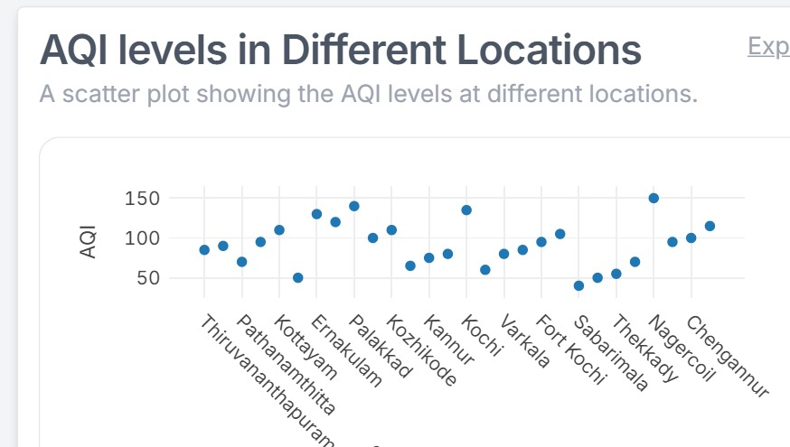

Analysis
Here is the classification of locations based on AQI values into Low, Medium, and High Pollution categories:
Low Pollution (AQI ≤ 50):Idukki (AQI: 50)
Sabarimala (AQI: 40)
Vagamon (AQI: 50)
These regions have the cleanest air with little to no health risks, located in natural, forested, or hilly areas.
Medium Pollution (AQI 51-100):
Thiruvananthapuram (AQI: 85)
Kollam (AQI: 90)
Pathanamthitta (AQI: 70)
Alappuzha (AQI: 95)
Malappuram (AQI: 100)
Wayanad (AQI: 65)
Kannur (AQI: 75)
Kasargod (AQI: 80)
Munnar (AQI: 60)
Varkala (AQI: 80)
Bekal (AQI: 85)
Fort Kochi (AQI: 95)
Thekkady (AQI: 55)
Kottankulangara (AQI: 70)
Attingal (AQI: 95)
Chengannur (AQI: 100)
These areas have moderate pollution, which may affect sensitive groups but is generally acceptable for the public.
High Pollution (AQI > 100):
Kottayam (AQI: 110)
Ernakulam (AQI: 130)
Thrissur (AQI: 120)
Palakkad (AQI: 140)
Kozhikode (AQI: 110)
Kochi (AQI: 135)
Guruvayur (AQI: 105)
Nagercoil (AQI: 150)
Koyilandy (AQI: 115)
These locations have the highest pollution levels, potentially posing health risks, especially for sensitive groups such as children, the elderly, and individuals with respiratory issues.
This classification can provide insights into air quality trends across these regions, and you can display this information visually on a map or in tabular form on the frontend.
